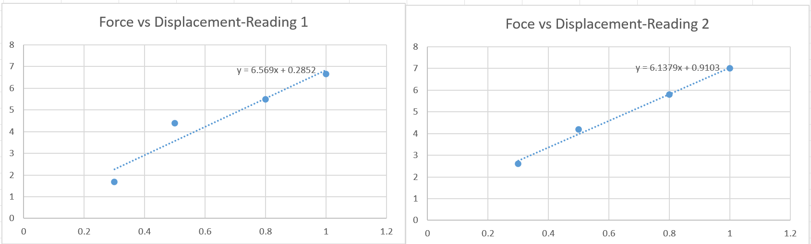
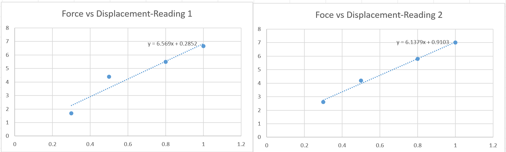

ABOUT
The stiffness of the ankle in the pogo stick-type model is characterized through a separate controlled experiment using a force-displacement test setup. This setup is designed to find out loads to the ankle joint and measure the corresponding load, allowing the finding of accurate force-displacement points.
PROJECT SETUP
Project Setup:
The setup contains an object which, for this project, a prototype of a ankle + leg of a quadruped similar to a pogostick model, with a Force Gauge ready to record data
Define Experiment Parameters:
A setup in which the model is fixated to the ground and a string is used to attach the leg and a hook of the force gauge. A set of displacement points are marked and the force gauge readings are taken at those points. The values are graphed out and the best fit is made to find the stiffness.
ROS2-Based Software Configuration:
The data of the Force readings are published and subscribed via ROS2 software to visualize the data. A GUI is also constructed using PyQT5 which will: 1. Visualize the Data (2-D Plot of Force data with respect to time). 2. Contain a button to start and stop recording 3. A recording system to save the data into a bagfile or a csv file.
Conduct Experiment:
The prototype is provided with tensile force, with the force gauge recording the force values with respect to time and passed through displacement markers with varying velocities to find out stiffness and damping.
Data Collection:
A best fit line is found with the data obtained is calculated whose slope will give stiffness(force vs displacement) or damping(force vs velocity)
Experimented data will then be collected to study on the attachment and be iterated with different parameters.
HARDWARE CONFIGURATION
The specimen or test object is fixated on the ground via supports and screws and via strings, the specimen is attached to the hook attachment of a Force Gauge which is placed horizontally and tensile forces are added onto the ankle component to get the reading. The Force Gauge will pass through a few marked displacement points and the force readings are plotted to find a best fit.

 

The project involves using two setups: 1. OptiTrack via ROS2 to drop test objects at predetermined positions. A vision system, will record drop points and trajectories 2. A force gauge is attached to the test object to measure the stiffness and deformation. The setup will fixate the test object to the ground and force will be measured at different displacements and velocities which forms data to find the best fit for the stiffness and damping of the prototype The experiment analyzes how factors such as object weight and shape influence it and how it relates to the simulation readings. ROS2 software will use a node to publish the sensors to ensure repeatability in the experiment. The process flow chart of our project is shown in the chart below.
SENSOR INTEGRATION
This project aims to develop a ROS 2-based robotic manipulation system that integrates OptiTrack motion capture technology , and force gauge for measuring simulation parameters. The goal is to drop them from a random height and angle and utilize the OptiTrack and find the projected trajectories. ROS2 will be used for processing and obtaining sensor information and real-time communication, ensuring seamless coordination between different sensor data. This experiment will help in supporting the simulation data of a similar model in MujoCo. The OptiTrack motion capture system will provide for improved tracking. By leveraging ROS 2’s distributed architecture, this project will enhance trajectory adaptation in real-time. The combination of motion capture (OptiTrack) will enable high-accuracy object handling. The findings from this experiment will have broader applications in industrial automation, assistive robotics, and testing.
INTERFACE AND AUTOMATION
The sensor data will be obtained using ROS2, and custom ROS2 nodes for real-time interaction. The experimentation result and automation will be influenced through:
- Vision-based Perception: OptiTrack motion capture data will be fused to provide high-accuracy object localization.
- Adaptive Motion Planning: ROS2 will handle trajectory updates dynamically, allowing the robot to adjust its movements based on real-time feedback.
- Automation:For automation, we used a UR5 to automate the experimental setup to remove the possibiliity of human error and repeatability.Third point
- Web-Based Dashboard: A user-friendly interface displaying object tracking data, and force gauge readings.
- Data Logging System: All relevant data (object positions, timestamps, drop locations, and trajectory corrections) will be stored in a ROS 2-based database for post-experiment analysis.
- UR5 Control: Develop a path planning program for UR5 for movement which facilitates the experiments.
CONTROL AND AUTONOMY
A low-latency feedback loop will be established to provide real-time feedback to the UR5 controller where sensor data is processed and transmitted. This enables the UR5 inverse kinematics and control algorithms to dynamically adjust grip strength and drop execution in real-time.
A High-Level decision-making module will also read long-term trends from sensor feedback to make higher-level decisions.
RESOURCES NEEDED
Since we heavily require camera sensing and sensor fusion, we would be needing knowledge about Control Systems and Autonomous Algorithms, Computer Vision, Object tracking and Sensor Fusion and Filtering Techniques. Furthemore, self study and expert advice will go a long way in covering the gaps.
Changes in environmental conditions
- To handle variability in the environment, the robot will leverage sensor fusion by combining OptiTrack motion capture for global positioning and force gauge for precise local object tracking, ensuring robust localization and more research data.
- In case of misalignment, the system will implement error recovery strategies, such as reattempting detection and adjusting the pick position. Additionally, ROS 2-based dynamic reconfiguration will allow real-time parameter tuning and trajectory modifications, supported by a web-based interface for manual overrides. This integrated approach ensures the system remains resilient and adaptable in dynamic environments, maintaining precise and reliable object manipulation.
IMPACT
Our team has no prior experience with ROS2, sensor fusion, or object detection, making this a valuable challenge for us to advance in robotic experimentation. We are focused on developing a robust and standalone test procedure for dropping test materials from a height. This process can be applied to material testing, orientation-based drop tests, impact conditioning, and assessing real-world behavior under critical conditions. Such a testing framework could significantly enhance rescue operations by evaluating the impact on a robot when deployed from higher floors, such as the 4th or 5th, ensuring better reliability in high-stakes scenarios.
ADVISING
We will be mentored by Dr. Daniel M. Aukes, who has expressed his interest in providing mentoring and access to state-of-the-art hardware facilities. Dr. Aukes' guidance will be a key factor in ensuring the technical aspects of the project are addressed effectively. His demands involve regular progress tracking, strict adherence to project milestones, and active participation in troubleshooting sessions. Other facilities, such as laboratory access and state-of-the-art simulation tools, have been guaranteed to aid in our experimental setup.